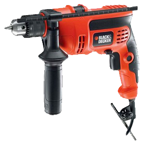
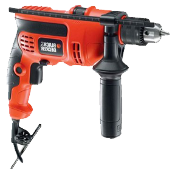
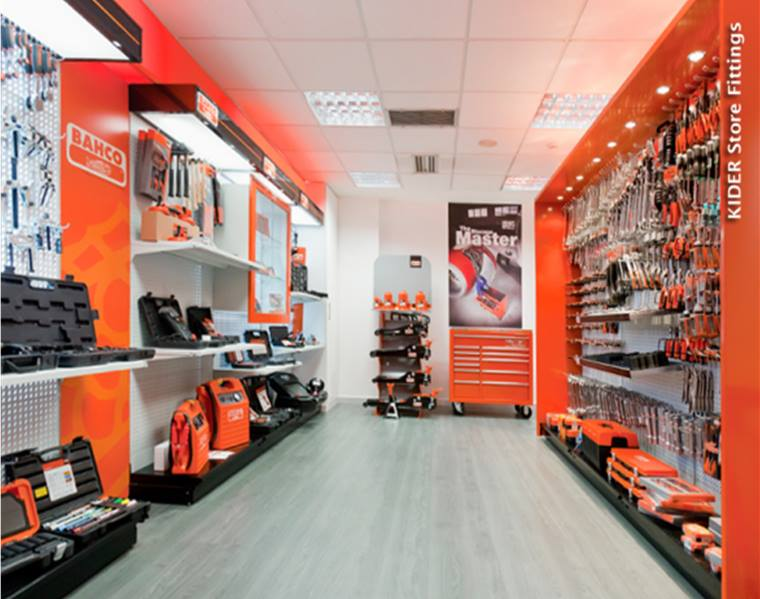

DSCIIF INVENTAFERRE

Inicio
¿Que es Inventaferre?
¿ Que es INVENTAFERRE?
Una ferretería es un establecimiento comercial dedicado a la venta de útiles para la construcción y las necesidades del hogar, normalmente es para el público en general aunque también existen dedicadas a profesionales con elementos específicos como: cerraduras, herramientas de pequeño tamaño, clavos, tornillos, silicona, persianas y otros más. 